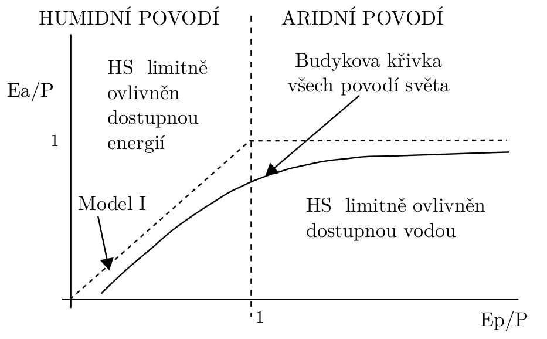

B
Budykova křivka
Budykova křivka je součástí modelu dlouhodobé hydrologické bilance. Přepodkladem je platnost následujícího vztahu \[ P = Ea + Q, \] kde \(\mathsf{P}\) je dlouhodobý roční srážkový úhrn, \(\mathsf{Ea}\) je výška dlouhodobé roční aktuální evapotranspirace a \(Q\) je dlouhodobá výška ročního odtoku.
Dle tohoto vztahu je možné vyjádřit douhodobý součinitel odtoku
\[ \frac{\mathsf{Q}}{\mathsf{P}} = 1- \frac{Ea}{P}. \] Dále je základním předpokladem platnost následujícího předpokladu \[ \frac{Ea}{P} = f (P, Ep), \] kde \(Ep\) je výška dlouhodobé roční potenciální evapotranspirace.
Budykovu křivku je možné vyjádřit například Schreiberovým modelem \[ \frac{Ea}{P} = 1- \exp(-\mathrm{AI}), \] kde \(\mathrm{AI}\) je index aridity, který je definován jako
\[ \mathrm{AI} = \frac{Ep}{P}. \] Index aridity rozděluje území do dvou skupin:
- aridní území \(Ep > P\)
- humidní území \(Ep < P\)
Jejich limitní faktory ukazuje následující obrázek.

Modely Budykovy křivky
Bowenův poměr
Poměr množství tepla, které zemský povrch předává kombinací molekulární vodivosti a turbulentní výměny do atmosféry a množství tepla, jež se na něm spotřebovává na výpařování vody, se nazývá Bowenův poměr. Tento poměr je přímo měřitelný.
\[ B = \dfrac{Q_h}{Q_e} \] kde \(Q_h\) je teplo zjevné a \(Q_e\) teplo latentní Sekce 1.0.1.
Typické hodnoty bowenova poměru uvádí tabulka (Campbell a Norman 2000)